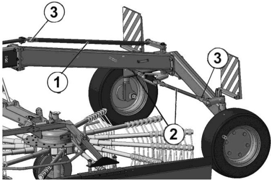

Лабораторная работа № 22
Тема: Подготовка к работе и выполнение регулировок тракторных граблей
Цель: Изучить устройство, назначение, подготовку к работе и выполнение регулировок ротационных граблей ГВБ-6,2
Выполняет учащийся:
Подготовка к работе и регулировки
- Регулировка зазора между концами зубьев граблин и почвойосуществляется с помощью механизма:
- Ширина валка при сгребании травы из прокоса в валок, в зависимости
от урожайности, регулируется от 1,2 до 1,8 м увеличением или
уменьшением
- Регулировка направления движения

Разработка А.Л.Бабицкий